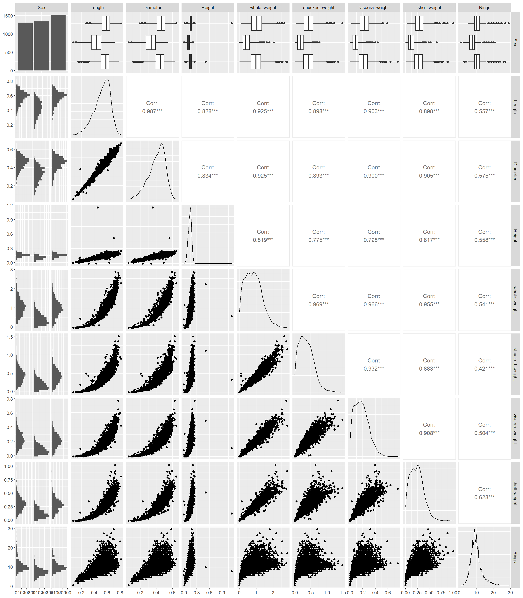
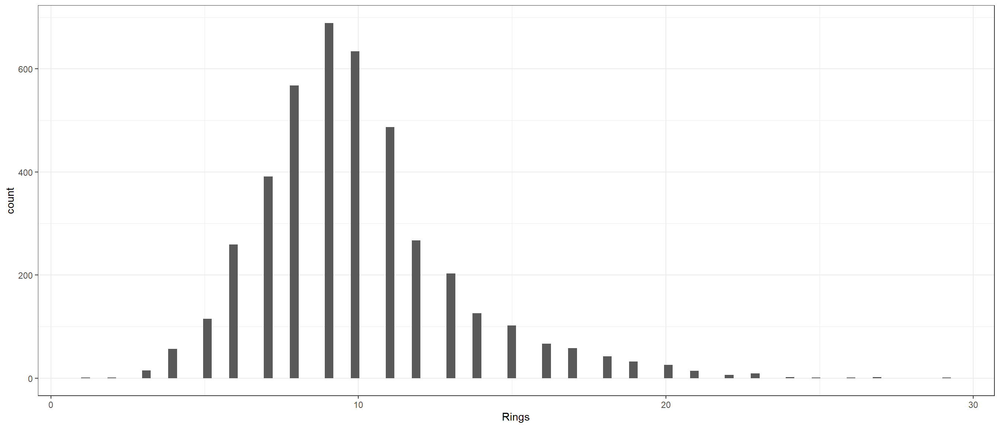

I found this dataset on UCI machine learning repository which gives the dataset measuring the characteristics of Abalone. The goal is to predict the age of Abalone which is done using the number of rings in Abalone. Generally, the age of abalone is the number of rings plus 1.5 As an example, if the number of rings of Abalone is 2, the age is estimated to be 2 + 1.5 = 3 years. However, measuring the number of rings is a painful process for the Abalone. Hence we will try to build a predictive model to predict the number of rings in Abalone using the phisical characteristics like the weight, height, diameter, etc.
library(reshape2)library(ggplot2)library(ggh4x)library(ggcorrplot)library(GGally) # for pairs plot using ggplot frameworklibrary(dplyr)# Load the datapath <-"https://raw.githubusercontent.com/adityaranade/portfolio/refs/heads/main/abalone/abalone.data"data0 <-read.csv(path, header =TRUE)colnames(data0) <-c("Sex", "Length", "Diameter", "Height", "whole_weight" ,"shucked_weight", "viscera_weight", "shell_weight", "Rings")# Data processing# Check the type of datadata0 |>str()
# num_data <- data0[, sapply(data0, is.numeric)]# # # Compute correlation matrix# corr <- round(cor(num_data, use = "pairwise.complete.obs"), 2)# # # Plot with correlation values# ggcorrplot(# corr,# hc.order = TRUE, # Cluster variables# type = "lower", # Show only lower triangle# lab = TRUE, # Add correlation numbers# lab_size = 3, # Number size# show.legend = TRUE, # Keep color legend# colors = c("red", "white", "blue") # Optional custom colors# )# Pairs plot between the explanatory variables to # check correlation between each pair of the variablesggpairs(data0)

The response variable rings is high correlated with all the variables which is good. However, the explanatory variables are correlated within themselves which is not a good indication. This indicates there is severe multicollinearity. This means two variables give similar information about the response variable.
The number of rings is a integer and the histogram can be seen below.
# Check the histogram of the response variableggplot(data0,aes(Rings))+geom_histogram(bins=100)+theme_bw()

This can be treated as a count data and we can use the Poisson regression. However in Poisson regression, the mean and variance of the response variable quality should be same.
# Check if the mean and variance of response variable is same.# Meandata0$Rings %>% mean
[1] 9.932471
# Variancedata0$Rings %>% var
[1] 10.39161
The mean is quite similar to the variance. Hence we can use the Poisson regression to model the data. Based on the correlation plot, shell weight has the highest correlation with rings, so we will use only shell weight and sex as response variable. First we split the data into training and testing set and then run the regression model. We will compare a linear regression model and Poisson regression model. The predictions will be rounded and compared to the raw data through a table.
# Only select the variablesdata <- data0 |>select(Sex, shell_weight, Rings)# split the data into training and testing dataseed <-23set.seed(seed)ind <-sample(1:nrow(data),floor(0.8*nrow(data)),replace =FALSE)# Training datasetdata_train <- data[ind,]# Testing datasetdata_test <- data[-ind,]
If we look carefully, after rounding, the predictions are just around the diagonals, which is decent. Due to multicolinearity, we cannot use multiple variables in the model without some data reduction techniques. We can use the principal component analysis then use the linear regression or Poisson regression. I did try them and the results were similar. So overall, its not a bad model but not extremely good model.